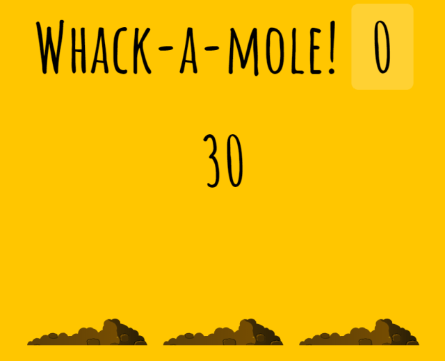

30 — Whack A Mole

主題
JS30的最終篇啦！這次要來做一個打地鼠的小遊戲:D
Whack A Mole
Github
步驟
Step1. 取得頁面元素並設定預設變數
1
2
3
4
5
6
7
8
| /** 取得頁面元素 */
const holes = document.querySelectorAll('.hole');
const scoreBoard = document.querySelector('.score');
const moles = document.querySelectorAll('.mole');
/** 預設變數設定 */
let lastHole; // 最後一次出現的地鼠洞
let timeUP = false; // 遊戲時間是否結束戳記
let score = 0; // 分數
|
Step2. 亂數決定地鼠出現後存在的時間&地鼠出現的洞
1
2
3
4
5
6
7
8
9
10
11
12
13
14
15
16
17
| /** 地鼠出現後存在時間，傳入最小&最大值，回傳一個區間亂數 */
function randomTime(min, max) {
return Math.round(Math.random() * (max - min) + min);
}
/** 地鼠出現的洞 */
function randomHole(holes) {
// 取得地鼠洞數量區間內隨機一個洞
const idx = Math.floor(Math.random() * holes.length);
const hole = holes[idx];
// 避免骰到相同的
if (hole === lastHole) {
return randomHole(holes);
}
// 紀錄最後一個出現的地鼠洞
lastHole = hole;
return hole;
}
|
Step3. 地鼠出現的主程式
1
2
3
4
5
6
7
8
9
10
11
12
13
14
15
16
| /** 地鼠出現 */
function peep() {
// 取得存在時間
const time = randomTime(300, 1000);
// 取得出現的洞
const hole = randomHole(holes);
// 移除已槌標記
hole.querySelector('.mole').classList.remove('bonked');
// 增加出現的動畫class
hole.classList.add('up');
// 設定存在時間到的時候移除出現動畫，且若遊戲時間未結束就繼續跑下一run
setTimeout(() => {
hole.classList.remove('up');
if (!timeUP) peep();
}, time)
}
|
Step4. 打地鼠
1
2
3
4
5
6
7
8
9
10
11
12
13
| /** 打地鼠 */
function bonk(e) {
// isTrusted防止腳本操作，class有bonked代表已被搥過，若符合上述兩者則不進行
if(!e.isTrusted || this.classList.contains('bonked')) return;
// 替被打到的地鼠加上bonked的樣式避免連續點擊得分
this.classList.add('bonked');
// 打到就移除出現的動畫
this.classList.remove('up');
// 加分
score++;
// 更新顯示分數
scoreBoard.textContent = score;
}
|
Step5. 開始遊戲設定，並綁定打地鼠動作到每個地鼠身上
1
2
3
4
5
6
7
8
9
10
11
12
13
14
| /** 開始遊戲 */
function startGame() {
// 時間重置
timeUP = false;
// 分數歸零
scoreBoard.textContent = 0;
score = 0;
// 執行地鼠出現函式
peep();
// 設定十秒後把時間押為結束
setTimeout(() => timeUP = true, 10000);
}
// 替每個地鼠加上click事件綁定bonk（打地鼠）
moles.forEach(mole => mole.addEventListener('click', bonk));
|
補充 自己的寫法
變數
1
2
3
4
5
| const holes = document.querySelectorAll('.hole');
const scoreBoard = document.querySelector('.score');
const moles = document.querySelectorAll('.mole');
const time = document.querySelector('.time'); //倒數計時
let tem;
|
function
1
2
3
4
5
6
7
8
9
10
11
12
13
14
15
16
17
18
19
20
21
22
23
24
25
26
27
28
29
30
31
32
33
34
35
36
37
38
39
40
41
42
43
44
45
46
47
48
49
50
51
52
53
54
55
56
57
58
59
60
61
62
63
| //地鼠要隨機跑出來 -> 隨機時間
function randomtime(min,max) {
return min + Math.random() * (max - min)
}
// 隨機地鼠
function randomhole() {
let x = setInterval(molesup,randomtime(200,2000))
setTimeout(() => {
clearInterval(x)
},30000)
}
// 隨機地鼠上升
function molesup() {
const num = Math.floor(Math.random() * holes.length)
if(tem !== num) {
tem = num
holes[num].classList.add('up')
//setTimeout 時間到後自動執行，不會重複執行
//如果地鼠還在上升的狀態才執行，有可能因為點到地鼠的關係已經下降了
if(holes[num].classList.contains('up')) {
setTimeout(() => {holes[num].classList.remove('up')}, randomtime(500, 2000))
}
} else {
console.log('haha')
molesup()
}
}
//開始遊戲以及歸零記分板
function startGame() {
//清除所有setTimeout && setInterval
stopgame()
//記分板歸零
scoreBoard.innerHTML = Number(0)
//秒數初始化
time.innerHTML = 30
//地鼠全部下降
holes.forEach(hole => {
if(hole.classList.contains('up')) {
hole.classList.remove('up')
}
})
//開始倒數計時
let countdown = setInterval(() => {
time.innerHTML = time.innerHTML - 1
//當時間為0，停止倒數
if(time.innerHTML == 0) {
clearInterval(countdown)
}
},1000)
//開始遊戲
randomhole()
}
//清除所有setTimeout && setInterval
function stopgame() {
let highestIntervalId = setInterval(";");
for (let i = 0 ; i < highestIntervalId ; i++) {
clearInterval(i);
}
let highestTimeoutId = setTimeout(";");
for (let i = 0 ; i < highestTimeoutId ; i++) {
clearTimeout(i);
}
}
|
事件
1
2
3
4
5
6
7
8
9
10
11
| // 點擊地鼠更新計分板
// 有點到地鼠時，地鼠會馬上下降，並出現另一個新地鼠
holes.forEach(hole => {
hole.addEventListener('click', () => {
if(hole.classList.contains('up')) {
scoreBoard.innerHTML = Number(scoreBoard.innerHTML) + 1
hole.classList.remove('up')
molesup()
}
})
})
|
程式備註
Event.isTrusted
可以透過此屬性來判斷事件物件是否由使用者操作來產生，而非透過程式觸發的操作。
MDN-Event.isTrusted